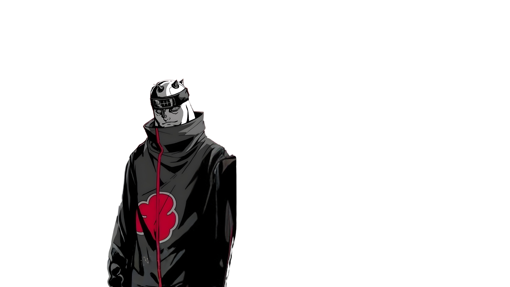
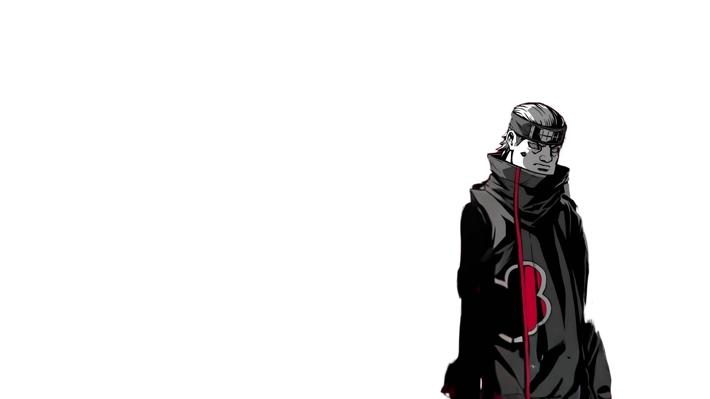
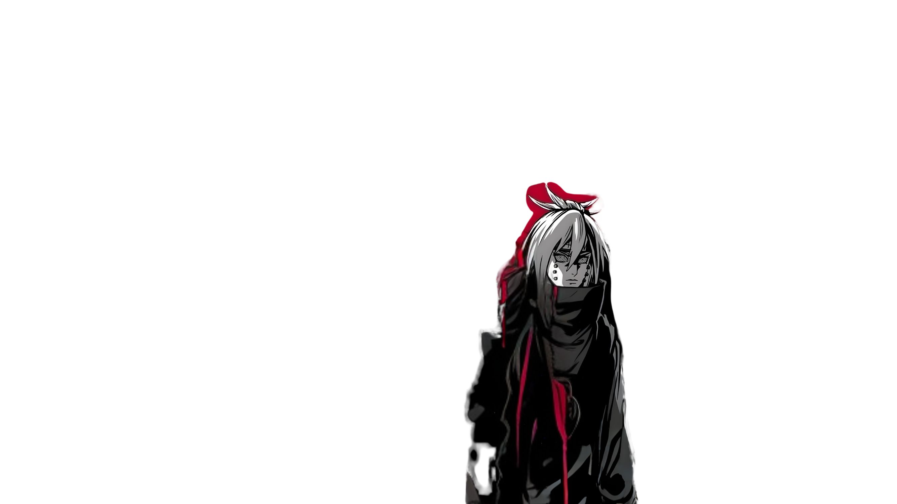

ANALISIS PERTUMBUHAN FINANSIAL
Tinjauan Kinerja Komparatif: PT Mayora Indah Tbk & PT Indofood CBP (2020 - 2025)
Program Studi
Manajemen - Semester 3
UNPAM Kampus Serang
Penyusun / NIM
Aziz Maulana
NIM: 221011400000Mata Kuliah
Manajemen Keuangan
Tugas Mandiri 1
Tekan Spasi Untuk Membuka Segel Akatsuki
TIM ANALIS AKATSUKI

AZIZ M.
Ketua TimDOSEN P.
PengujiDOSEN P.
Pembimbing
RISET 1
Penanya
RISET 2
Penjawab
NOTULEN
MC / FormalAWAL MULA: PROFIL PERUSAHAAN
PT Mayora Indah Tbk
MYORSalah satu kelompok bisnis produk konsumen terkemuka di Indonesia. Mengolah produk makanan & minuman ikonik seperti Biskuit Roma, Kopiko, Torabika, dan Energen.
PT Indofood CBP Tbk
ICBPPemain dominan dalam industri produk konsumen bermerek di Indonesia dengan portofolio mi instan (Indomie), penyedap, produk susu, dan makanan ringan.
BAB I: POSISI KEUANGAN (NERACA)
| Indikator | '20 | '21 | '22 | '23 | '24 | '25 |
|---|---|---|---|---|---|---|
| Aset Lancar | 12.8k | 12.6k ↓ | 14.7k ↑ | 16.0k ↑ | 17.5k ↑ | 19.5k ↑ |
| Aset Tetap | 6.9k | 7.2k ↑ | 7.5k ↑ | 7.8k ↑ | 8.3k ↑ | 8.6k ↑ |
| Utang Lancar | 3.5k | 4.4k ↑ | 5.2k ↑ | 4.4k ↓ | 4.8k ↑ | 5.0k ↑ |
| Utang JP | 5.0k | 4.1k ↓ | 4.2k ↑ | 4.1k ↓ | 4.1k ↑ | 4.1k = |
| Modal (Ekuitas) | 11.2k | 11.3k | 12.8k | 15.2k | 16.8k | 18.9k |
| Indikator | '20 | '21 | '22 | '23 | '24 | '25 |
|---|---|---|---|---|---|---|
| Aset Lancar | 20.7k | 28.3k ↑ | 25.1k ↓ | 29.1k ↑ | 33.0k ↑ | 38.0k ↑ |
| Aset Tetap | 82.8k | 89.7k ↑ | 90.2k ↑ | 90.1k ↓ | 92.0k ↑ | 94.0k ↑ |
| Utang Lancar | 9.5k | 14.1k ↑ | 12.3k ↓ | 13.5k ↑ | 14.5k ↑ | 16.0k ↑ |
| Utang JP | 43.7k | 49.2k ↑ | 45.1k ↓ | 43.2k ↓ | 42.5k ↓ | 42.0k ↓ |
| Modal (Ekuitas) | 50.3k | 54.7k | 57.8k | 62.4k | 68.0k | 74.0k |
BAB II: KINERJA LABA RUGI (EBIT & EAT)
40.503 M
Tumbuh konsisten dari 24.476 M (2020) hingga mencapai 40.503 M (2025).
3.334 M
Sempat anjlok -42.3% di 2021, lalu melesat +62.7% di 2022 hingga tembus 3.3 M.
78.000 M
Skala raksasa pasar, meroket drastis dari 46.641 M (2020) ke 78.000 M (2025).
8.200 M
Sempat tertekan di 2022 (4.5 M) sebelum meroket +52.4% di 2023 ke 8.2 M.
BAB III: TREN PENJUALAN KOMPARATIF
KEHANCURAN & KESIMPULAN
MYOR (MAYORA)
POLA: FLUKTUATIF PROGRESIFTumbuh positif dalam jangka panjang. Memiliki ketahanan tinggi meski menghadapi kontraksi beban bahan baku di tahun 2021 & 2024.
ICBP (INDOFOOD)
POLA: FLUKTUATIF PROGRESIFDominasi skala pasar yang belum tertandingi. Berhasil melewati krisis laba 2022 dan mencetak rekor laba bersih baru di 2023-2025.
ADA PERTANYAAN?
"Dunia Tidak Akan Pernah Memahami Perdamaian Sampai Mereka Memahami Rasa Sakit." — Pain Akatsuki